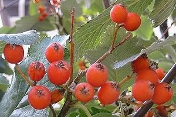

|
| Woher kommt der Name Mehlbeere?
Die Apfelfrüchte sehen aus wie Beeren.
Sie wurden früher getrocknet, gemahlen und als Mehl zum Brotbacken verwendet.
 | Außerdem ist die Blattunterseite mehlig weiß behaart.
Auf Englisch heißt die Mehlbeere
Whitebeam. |